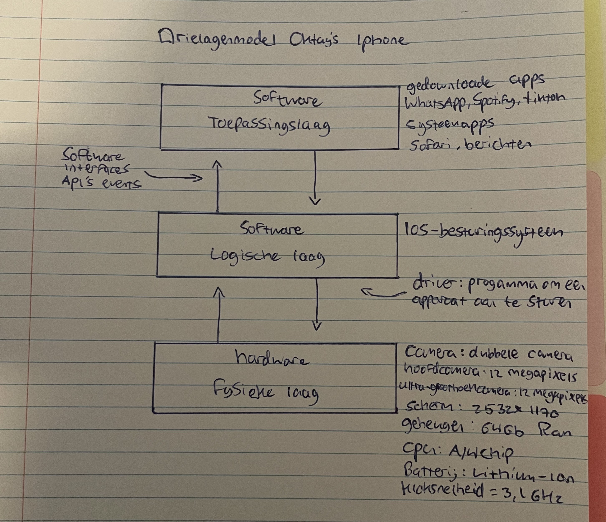

Hardware en software moeten met elkaar samenwerken om een computer te laten werken. Hierbij wordt het drielagenmodel gebruikt. Deze bestaat uit de toepassingslaag, de logische laag en de fysieke laag. De drie lagen van het drielagenmodel moeten met elkaar samenwerken en communiceren, anders werkt het systeem niet. Dit gebeurt met interfaces. Interfaces kunnen we onderscheiden in drie soorten software-interfaces. 1: User-interface. Deze komt het vaakst voor. Communiceren met behulp van knoppen, touchscreen en het display vallen onder het user-interface. Een simpele voorbeeld is als je op een icoon van een app klikt (bijvoorbeeld WhatsApp). 2: Driver. Het gaat hierbij om interfaces tussen hardware en software. Ieder apparaat (printer, muis, monitor) heeft een eigen stuurprogamma nodig. Dit is waar de driver aan boord komt. 3 API's: hier zal ik diep op ingaan onder het kopje 'topassingslaag'. Zou u meer willen weten over het drielagenmodel? Klik dan gerust op een van de 5 kopjes door met uw muis over 'drielagenmodel' heen te gaan. Ten slot ziet u hieronder het drielagenmodel van mijn eigen telefoon!
